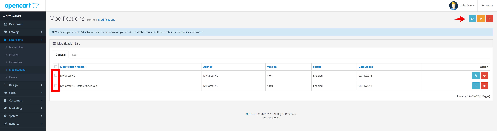
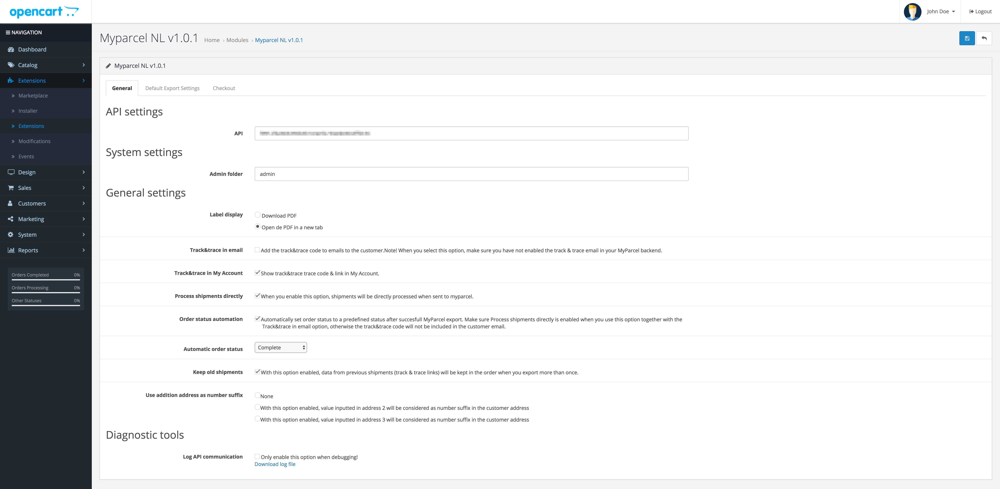

Inleiding
In deze handleiding laten we zien hoe je de MyParcel plug-in kunt installeren in jouw OpenCart winkel. Vervolgens geven wij een instructie van het gebruik van de plug-in.
De installatie en het gebruik van de koppeling wordt je kosteloos aangeboden door MyParcel. Wij helpen je graag met vragen over het gebruik van de plug-in. Omdat OpenCart een opensource platform is kan het zijn dat de MyParcel plug-in conflicteert met reeds geïnstalleerde plug-ins. Mocht je problemen ondervinden met de installatie, raden wij je aan contact op te nemen met jouw webbouwer.
Inhoud
1 Installatie
Dit hoofdstuk omschrijft de installatie van de MyParcel OpenCart Plug-in met gebruik van de “Extension installer”. Vanaf Opencart 2 is het mogelijk om de extensie te installeren via de “Extension installer”.
Wij adviseren de installatie altijd eerst op een testomgeving uit te voeren en een back-up te maken van jouw webshop voor je begint.
- Download het MyParcel OpenCart Plug-in.zip bestand
- Pak het gedownloade bestand uit.
1.1 Via FTP
- Upload de bestanden die in het mapje ‘upload’ staan naar de rootdirectory van de OpenCart website
1.2 Via het CMS
- Ga naar Extensions en installeer “myparcel.zip” d.m.v. de OpenCart “Extension installer”.
- Ga naar Extensions > Modifications selecteer “Modification MyParcel” en druk rechtsboven op “Refresh”. 

2 Configuratie
- Ga in OpenCart naar Extensions → Modules → Myparcel NL → Edit

2.1 Algemeen
2.1.1 API instellingen
Om verbinding te kunnen maken met jouw MyParcel account is het noodzakelijk om hier jouw API-key in te vullen.
Als je ingelogd bent in jouw MyParcel account op backoffice.myparcel.nl dan is deze te vinden in menu Instellingen → Algemeen.
2.1.2 Label weergave
Geef hier aan of je het label direct wilt downloaden of wilt openen in een nieuw scherm.
2.1.3 Track&Trace instellingen
Stel jouw Email track&trace code in zodat het emailadres van de klant wordt meegestuurd naar MyParcel. Het emailadres kan door MyParcel worden gebruikt om de Track&Trace mail te versturen naar de klant.
2.1.4 Diagnostische hulpmiddelen
Je kunt de diagnostische hulpmiddelen inschakelen op het moment dat er problemen zijn met het exporteren van de zendingen.
2.2 Standaard exportinstellingen
2.2.1 Pakkettype koppelen aan verzendkosten
Je kunt verzendmethoden koppelen aan een pakkettype, zodat het juiste label wordt aangemaakt in jouw MyParcel account. Met onderstaand voorbeeld lichten we dit verder toe.

In het voorbeeld is er te zien dat de verzendmethode MyParcel Shipping is gekoppeld aan Parcel. Daarnaast is het mogelijk om jouw overige verzendmethoden te koppelen aan andere pakkettypes.
2.2.2 Koppel emailadres klant

Je kunt de keuze maken om wel of niet het e-mailadres vanuit jouw orders mee te sturen naar MyParcel. Wanneer je het emailadres van de klant koppelt, kan je instellen dat MyParcel jouw Track&Trace emails verstuurd naar dit adres. Op de pagina Instellingen → Track & Trace in jouw MyParcel backend kun je zelf deze email in of uitschakelen en opmaken in jouw eigen stijl.
2.2.3 Extra verzendopties
Geef direct aan wat jouw standaard verzendopties zijn voor jouw Nederlandse pakketzendingen. Je kunt hier kiezen voor extra groot formaat, alleen huisadres, handtekening voor ontvangst, retour bij geen gehoor en verzekerd verzenden. Jouw zendingen krijgen hiermee standaard de verzendoptie mee wanneer je deze exporteerd. De opties die je hier aangeeft kan bij het exporteren altijd nog per zending aangepast worden.
2.2.4 Label omschrijving
Met deze optie kun je een beschrijving toevoegen aan de zending. Dit zal worden afgedrukt op de linkerbovenhoek van de het label en kun je gebruiken om de zending in het MyParcel zendingenoverzicht op te zoeken. Gebruik [ORDER_NR] om het ordernummer te vermelden.
2.3 Checkout instellingen
Via het tabblad ‘Checkout’ heb je de mogelijkheid om meer verzendopties toe te voegen in jouw checkout. Ook is het mogelijk om ervoor te kiezen de checkout niet enkel bij pakketten te tonen maar ook voor alle verzendmethoden.

2.3.1 Bezorgopties
Bij de verschillende bezorgopties is het mogelijk een toeslag in te stellen die voor de desbetreffende bezorgoptie doorberekend wordt aan jouw klant via de checkout. Het is dus een toeslag op de standaardtarieven die je al hebt ingevoerd. In onderstaand voorbeeld zie je hoe deze toeslagen in de check-out terugkomen.

Je ziet bij de checkout instellingen nog 4 andere instellingen. Dit zijn Dropoff days, Cut-off time, Dropoff delay en Delivery days window. Op basis van deze instelling worden de juiste levertijden en –dagen getoond aan jouw klanten via de checkout, gebaseerd op jouw manier van orderverwerking.

2.3.2 Vewerking van zendingen
Dropoff days
Hiermee kun je aangeven op welke dagen jij het pakket afgeeft bij een PostNL locatie. Jouw klanten krijgen hiermee de juiste beschikbare bezorgdagen aangeboden.
Cut-off time
Met de sluitingstijd kun je aangeven tot welk moment van de dag de orders nog verwerkt kunnen worden. Als je elke dag rond 17:00 de bestellingen naar een PostNL locatie brengt is het handig om de laatste order rond 16:00 te verwerken. Wanneer jouw klanten na dit tijdstip een bestelling plaatsen zien zij een latere levermogelijkheid. Bijvoorbeeld: Sluitingstijd is om 16:00 en je kunt dezelfde dag de orders verwerken en op tijd inleveren. Dan zal jouw klant als eerste levermogelijkheid voor 16:00 de volgende dag zien. Wanneer jouw klant na 16:00 besteld zal het de dag erna zijn.
Dropoff delay
Je kunt hier instellen hoeveel dagen jij nodig hebt om een order, die vóór jouw laatste besteltijd binnenkomt, te verwerken. Als je bijvoorbeeld 1 dag invult, zal er in de weergave in de check-out altijd rekening gehouden worden met het feit dat jij de pakketten dus niet morgen geleverd worden. Bijvoorbeeld: De bestelling wordt geplaatst op 16 september voordat jij naar het PostNL punt gaat. Je hebt echter een verwerkingstijd van 1 dag ingesteld, dus de eerste mogelijkheid voor jou om het pakket in te leveren is dan 17 september. Jouw klant krijgt dan dus pas 18 september als eerst mogelijke leverdag te zien.
Delivery days window
Met deze optie kun je aangeven tot hoever in de toekomst jouw klanten een leverdag kunnen kiezen. In dit geval staat het op 10 dagen, maar dit kan natuurlijk ook 2 of 5 dagen zijn. Het maximum is 14 dagen. Wanneer het leverdagenvenster op '0' wordt gezet, zullen de dagen niet meer worden getoond, waardoor de consument geen dag meer kan kiezen.
Let op: PostNL houdt geen rekening met de gekozen leverdag van jouw klant. Je dient zelf zorg te dragen voor het op de juiste dag inleveren van jouw pakket.
3 Orderoverzicht
In het orderoverzicht kun je eenvoudig zien wat voor zending de nieuwe bestelling betreft. Ook kun je makkelijk het pakkettype wijzigen indien dit gewenst is. Wanneer je op Parcel klikt verschijnt het venster eronder. Hierin is het mogelijk om verzendopties uit te schakelen of juist toe te voegen of het soort zending aan te passen.
Na het kiezen van jouw gewenste opties of het wijzigen van het Soort zending klik je op Opslaan en daarna kun je deze keuze exporteren naar MyParcel en het gewenste label aanmaken.

Je kunt op 2 manieren jouw orders doorzetten naar MyParcel en hier vervolgens een label voor uitprinten. Namelijk door een order
(of meerdere orders) te selecteren en vervolgens naar Acties te gaan. Daar kun je jouw keuze maken Print Batch, Export Batch en Export Print Batch
Zowel bij bulk als bij een enkele export wordt er een laadicoontje zichtbaar. Vervolgens wordt de pagina ook direct ververst.
(zie voorbeeld hieronder)

3.1 Retourlabel email
Vanuit het orderoverzicht kun je een retourlink naar jouw klant sturen. Jouw klant ontvangt een e-mail met een link er in om eenvoudig een retourlabel te printen. In onderstaande afbeelding kun je zien welk icoontje hiervoor gebruikt kan worden.


4 Orderdetails
Uiteraard is het ook mogelijk om zendingen vanuit de order detailpagina zendingen aan te maken. Door op een view te klikken kom je op een pagina waar meer details over deze bestelling te vinden is.

5 Zending informatie
Als je informatie over jouw zending wilt zien is het niet nodig om dit te bekijken in jouw MyParcel account. Je kunt deze informatie bekijken in jouw order overzicht in Opencart.
Bij iedere order is een knop te zien van Parcel, Unpaid letter of Mailbox package als je hier op klikt wordt er meer informatie getoond over de status van de zending.

6 Hulp nodig?
Indien je vragen hebt over de installatie of het gebruik van de plug-in, helpen wij je graag. Ook tips & suggesties voor verbetering van de (werking) van de plug-in, horen wij graag. Mail support@myparcel.nl of bel: 023 30 30 315.